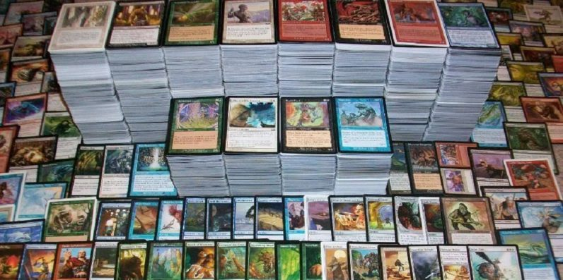
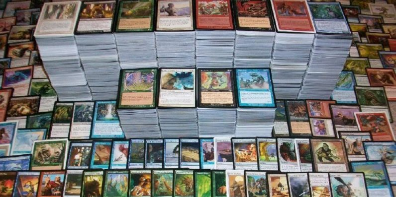
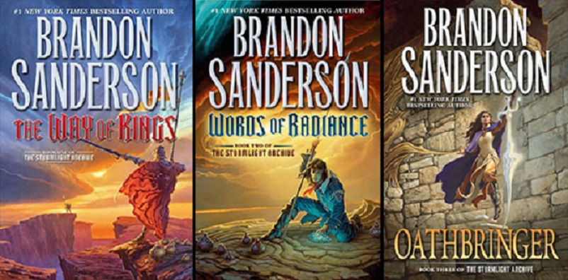

Glade's Favorite Things
Funk Music
Glade is very passionate about many styles of music. The main style of music he loves is funk. Funk music was created by many people, but the majority of the credit for pioneering the genre goes to James Brown and Sly Stone.


Strategy Games
Another one of Glade's passions are strategy games. Real time strategy or RTS games are Glade's favorite. He has played such games as Starcraft 2 and Warcraft 3 for years. He is also a large fan of the trading card game Magic the Gathering.
 

Fantasy Literature
Glade is a fan of fantasy literature. His favorite authors are Patrick Rothfuss, Brandon Sanderson, Scott Lynch, and many others.
